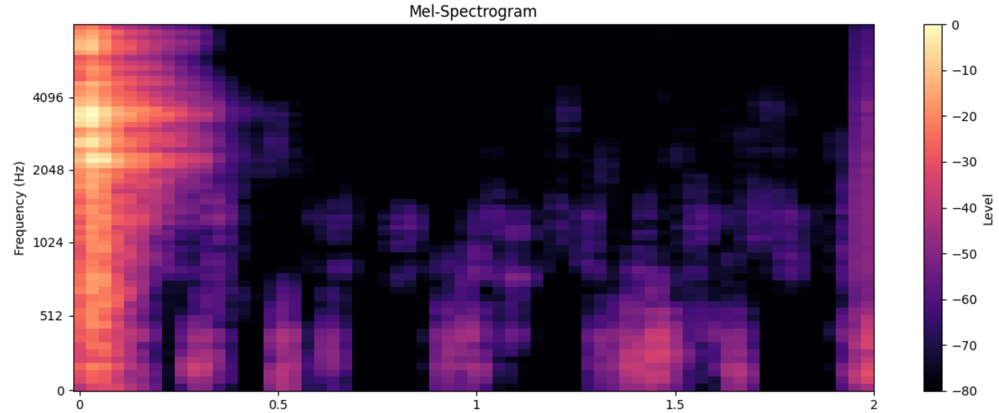
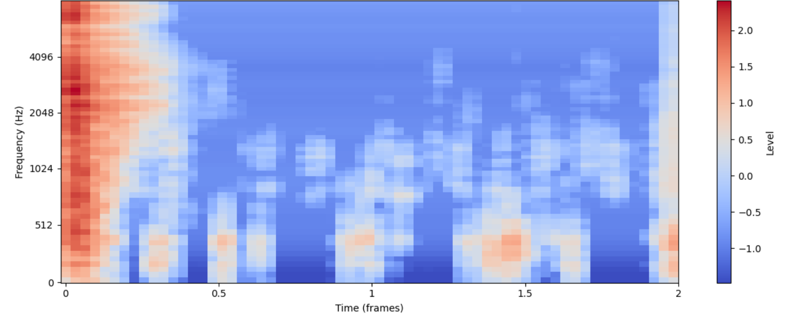
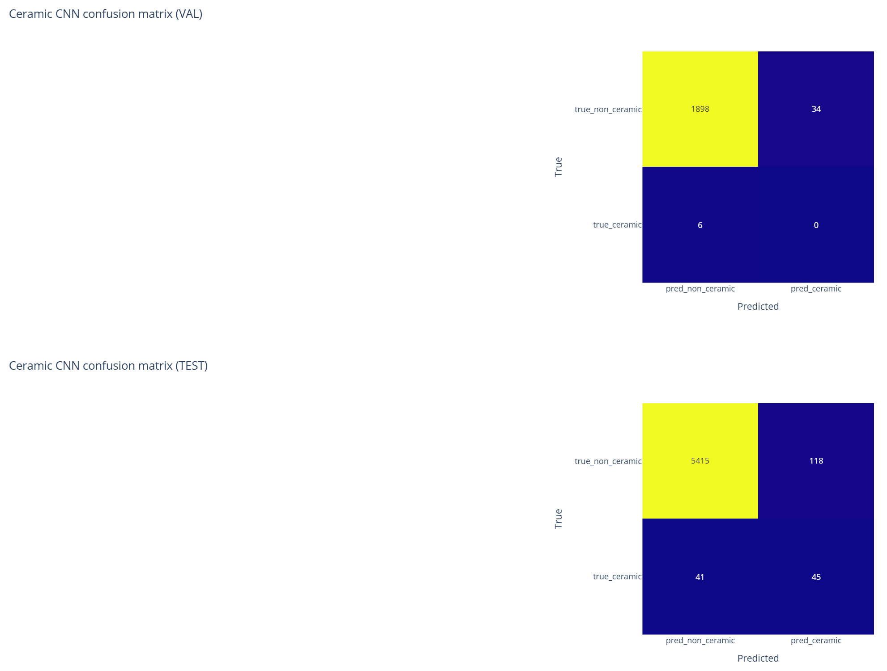
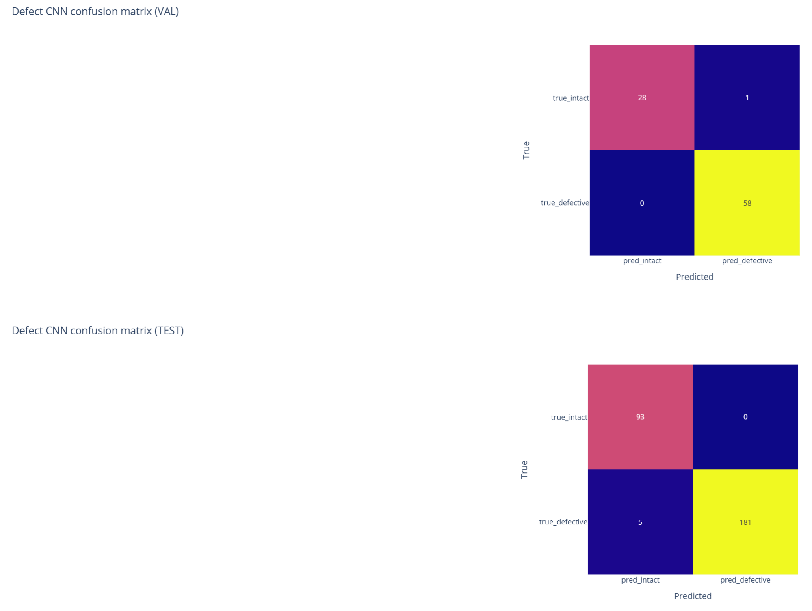
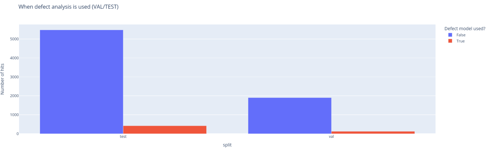
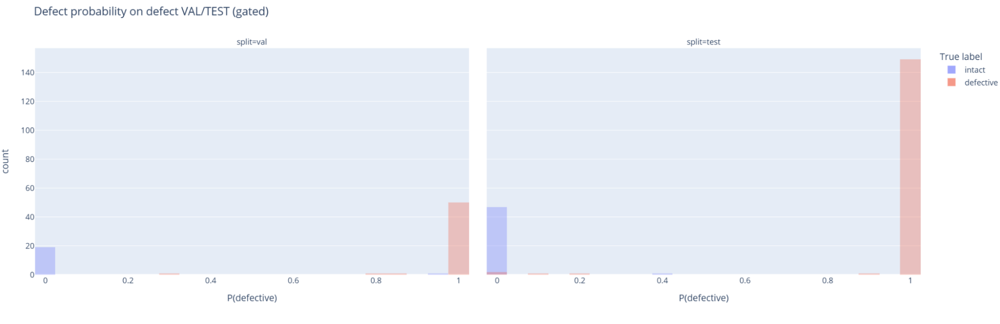
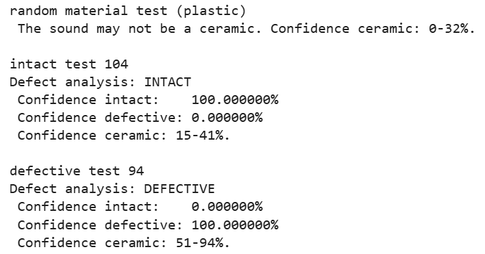

A ceramic/pottery quality control check.
Dan Bachmann, Student ID: 251032362
Having experimented with audio generation systems, I pivoted to a practical classification task. There is a real-world application for potters who may have unseen defects in their work. These are often fractures or weaknesses that would classify as defective manufacturing. These can be detected by the “ringing” sound made after striking the object.
This system has two recognition tasks on the same audio domain. Task 1 is material classification: predict whether a hit sound comes from a ceramic object or from a non-ceramic object/noise (plastic, fabric, etc.). Task 2 is defect classification: for hits that do come from ceramics, predict whether the ceramic is intact or has a synthetic defect applied. These tasks are related but not identical: Task 1 captures broad material properties, while Task 2 focuses on subtle changes in resonance caused by defects.
The high-level sequential pipeline first determines whether a given hit is ceramic and only if the system is confident it is ceramic, performs a defect analysis. The pipeline combines a convolutional neural network (CNN) trained on log‑mel spectrograms, a wav2vec‑based ceramic detector, and a separate CNN trained on a defect dataset. Each model was evaluated independently and also evaluated together as a combined system.
The training dataset was based on the Greatest Hits dataset. From this, the audio and metadata files were used to identify time locations of “hit” sounds of ceramics. These were then evaluated to find the exact point of strike to put into isolated “hit” WAV files. These were then used to generate mel-spectograms. These were also padded to a consistent 64 frames, converted to mono 16kHz and normalised at this stage so that all samples yield tensors with a shape suitable for CNN input.


figure: spectrogram before and after normalisation
Manifest files were written as CSVs for each stage. Each row corresponds to one “hit” audio file and includes a material label (e.g. “ceramic”, “plastic”), a binary label_material field (0 for non‑ceramic, 1 for ceramic), and a split field indicating whether the hit is assigned to train, val, or test for the material classification task. The splits are created once and reused across models to keep evaluations comparable.
Defect “hit” sounds were not available, so using known attributes of ceramic defect sounds, the data was augmented with what defects would statistically sound like. A second manifest, the defect dataset, where each row has a label_defect field (0 for intact, 1 for synthetic defect) and a text description of the defect label, was created.
In the MAIN (training and demo) notebook, we also prepare a wav2vec‑based representation for comparison and to complement our ceramic vs non‑ceramic classifier. A Wav2vec 2 model is used to extract an embedding from each waveform, saved to wav2vec_embeddings.npy alongside a filtered manifest, manifest_with_wav2vec.csv. A small feedforward classifier is trained on these embeddings to predict ceramics, and its output probabilities are later used as a second opinion in the pipeline.
Most of the “hits” are not of ceramics or are static (not in motion), so they would not all be used in training together to prevent the models from assuming everything is not a ceramic.
Originally a MultiTaskModel was implemented, but the overlap of ceramic detection and defect detection was not helping each other and the complexity of training was not justified. These have been left as separate classifiers rather than a two headed model.
The ceramic classifier is a small 2‑layer CNN operating on log‑mel spectrograms. The CeramicCNN class consists of two convolutional blocks (Conv2d → BatchNorm2d → ReLU → MaxPool2d), followed by a fully connected layer and a final linear classification head with two outputs (non‑ceramic vs ceramic). After flattening the convolutional features, a hidden layer of size 128 is used before the 2‑way output.
Training would be improved with more static ceramic hits than are available, though it proved it did learn which would be used in a weighted way.
On the validation split, the ceramic CNN achieves an accuracy of 0.9794 and a balanced accuracy of 0.4912. The confusion matrix shows 1,898 true non‑ceramic hits correctly classified as non‑ceramic, 34 non‑ceramics misclassified as ceramic, 6 ceramics misclassified as non‑ceramic, and 0 ceramics correctly classified on the small validation ceramic subset.
On the test split, the model achieves an accuracy of 0.9717 and a balanced accuracy of 0.7510. The confusion matrix shows 5,415 non‑ceramics correctly classified, 118 non‑ceramics predicted as ceramic, 41 ceramics predicted as non‑ceramic, and 45 ceramics correctly predicted as ceramic.

The class-wise precision and recall indicate that the non-ceramic class is modelled very strongly (precision 0.9925, recall 0.9787 on the test set), while the ceramic class remains challenging (precision 0.2761, recall 0.5233, F1 0.3614). This reflects the severe class imbalance and the relatively small number of ceramic examples compared to non‑ceramics.
The wav2vec classifier attains a test accuracy of 0.6731 and a balanced accuracy of 0.5020, with a strong bias towards the non‑ceramic class; it is nonetheless useful as an additional, independent source of ceramic confidence in the combined pipeline.
The defect classifier uses the same CNN architecture pattern as the ceramic CNN, but is trained exclusively on the ceramic defect manifest. The DefectCNN class consists of two convolutional blocks followed by a fully connected layer with hidden size 128 and a final 2‑way head (intact vs defective).
The defect CNN performs very strongly on both validation and test splits:

Class‑wise metrics confirm that both classes are well modelled: on the test set, intact has precision 0.949, recall 1.000, F1 0.9738, and defective has precision 1.000, recall 0.9731, F1 0.9864. These results indicate that the defect CNN is highly reliable at distinguishing intact from defective ceramics under the controlled recording conditions of the defect dataset.
The combined system is implemented in the analyse_hit function. It takes a path to a waveform and returns both the ceramic confidence and (if appropriate) a defect prediction. The function uses all three models previously described. The classification thresholds have been set as follows: ceramic_min=0.1, ceramic_max=0.33, defect_threshold=0.5. These values were determined by running a small batch of test files and plotting the results to find the best fit. The final report was using the analyse_hit logic for all validation and test hits. Since most examples are not of ceramics, we would expect the defect model to be used only for a minority of cases, which is what we can see in our experiment.


When the defect model was used, we see that it is confident in its prediction (accuracy of 0.9782).
Overall, the combined pipeline addresses the limitations of the single models: the ceramic CNN alone cannot distinguish intact from defective ceramics, and the defect CNN alone would happily classify non-ceramic sounds as “intact” or “defective” because it was never trained on non-ceramic examples. The gating strategy, based on agreement between the CNN and wav2vec ceramic probabilities, largely prevents defect decisions on non-ceramics, which could be from surrounding noise, while preserving high defect accuracy on the subset of ceramic hits that pass the gate.
The output of our system is below for 3 cases (chosen randomly): a randomly chosen material, a known defective sound and a known non-defective (intact) sound.

The main limitations of the system stem from the data rather than the architecture. The defect dataset uses synthetic defects on a limited set of ceramic items and recording conditions, so it is unclear how well the defect CNN would generalise to real cracks, chips, or glaze faults at the pottery factory. The material dataset is heavily skewed towards non‑ceramics, and the ceramic CNN’s recall for ceramics is weaker than for non‑ceramics. As a result, the gate may sometimes reject genuine ceramic hits. Our min/max thresholds dramatically reduce this, but the confidence of it being ceramic or not is weak from both the wav2vec and our ceramic CNN.
This project applies two deep learning models to use audio for ceramic quality control and proves this is a viable way to approach this problem. Quantitative analysis of the combined models in a sequential decision pipeline indicates that we can detect defect decisions on most non‑ceramic hits.
While the results are promising, especially for defect detection on the synthetic defect dataset, the system is not yet ready for real‑world deployment. Its performance on minority ceramic classes in the material dataset and on real defects remains uncertain. Future work would focus on improving data diversity and balancing and possibly using transfer or multi‑task learning to better share information between the material and defect tasks.
Potential next steps include collecting real defective ceramics and rebalancing the material dataset with more ceramics to improve ceramic recall. Learned combination strategies, such as transfer initialisation of the defect CNN from the ceramic CNN could be explored. While the early analysis of the multi-task model was not promising, with a richer dataset we may find the shared backbone has its place.